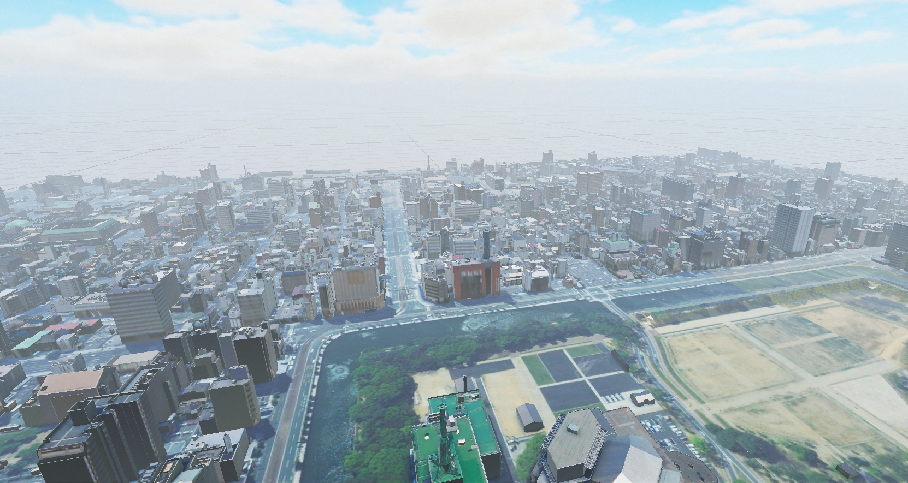
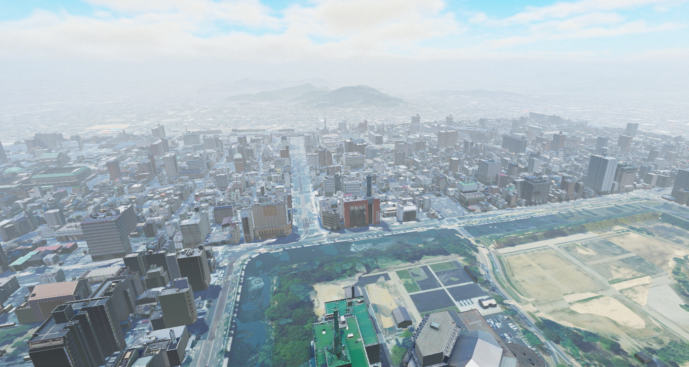

遠景表示設定
近景と遠景を適切に設定することで、パフォーマンスを最適化しつつ、都市の広がりを自然に表現できます。
遠景として設定されたエリアでは、都市モデルの詳細な地形データを使用せず、より軽量な手法で描画することで、負荷を軽減しつつ視認性を向上させます。これにより、都市全体の規模を把握しやすくなり、より自然な景観を実現できます。


設定方法
遠景として表示するエリアを確認し、セットアップ時に都市モデルのインポート対象から除外します。
遠景エリアの設定には、PLATEAU-SDK-Maps-Toolkit-for-Unity を使用します。
詳細な設定方法については、利用マニュアル を参照してください。